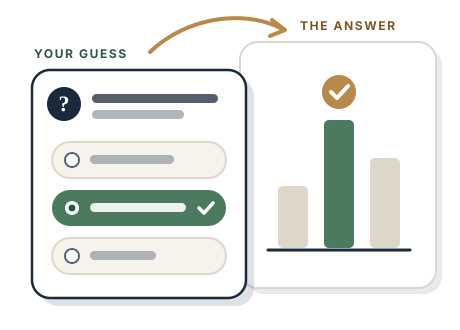

Most of us form our views about prison from news reports of individual cases. This survey asks what you think you know about Tasmania's prison system, then shows you the answer to each question as you go. It takes under ten minutes, and you will finish knowing more than when you started.

The survey opens to the public on 1 December 2026, shortly before Jason Wong's visit to Tasmania. It is completed at thesurvey.org.au.
Point your phone's camera at this code and tap the link that appears. It opens the survey directly.
Each question asks about a fact: what prison costs, who is in prison, how many people return. Pick the answer you think is closest. There is no penalty for being wrong.
After each question you see the correct answer and where it comes from.
We ask some opinion questions both before and after the answers, so we can see whether knowing the facts changes how people see things.
When they do, the things that most affect whether they offend again are found in the community: work, somewhere to live, family, and people willing to give them a chance. What the community believes about prison and the people in it matters.
Public debate about prisons in Tasmania often runs ahead of the facts. This survey is a way of putting the facts in front of people, and of finding out where the gaps in public knowledge are.
The survey opens shortly before the visit of Jason Wong, former Deputy Director of the Singapore Prison Service, who conceived Singapore's Yellow Ribbon Project. See Events for his visit.
Every answer the survey shows you is something Onesimus publishes, so every one has been checked against its source table: the Australian Bureau of Statistics and the Productivity Commission's Report on Government Services.
Where Tasmania has never counted something, the survey says so plainly rather than offering a number nobody can trace.
The answer key is being checked with the Tasmania Prison Service before launch. To be confirmed.
Opens at thesurvey.org.au, shortly before Jason Wong's visit, with coverage in the Tasmanian media.
The last day to take part.
A full report on what Tasmanians knew, what surprised them, and whether the answers changed their views. It will be published on this page.
We do not ask for your name or contact details. A few questions at the end ask about you so we can describe who took part. Results are only ever reported for groups of people, never for individuals.
You do not need to know anything about prisons to take part. In fact, the survey is most useful when people who have never thought much about prison take it. People who work in the justice system are welcome to take part too.
Churches, community groups, councils and service providers can help us reach more Tasmanians. Get in touch and we will send you the link when the survey goes live.